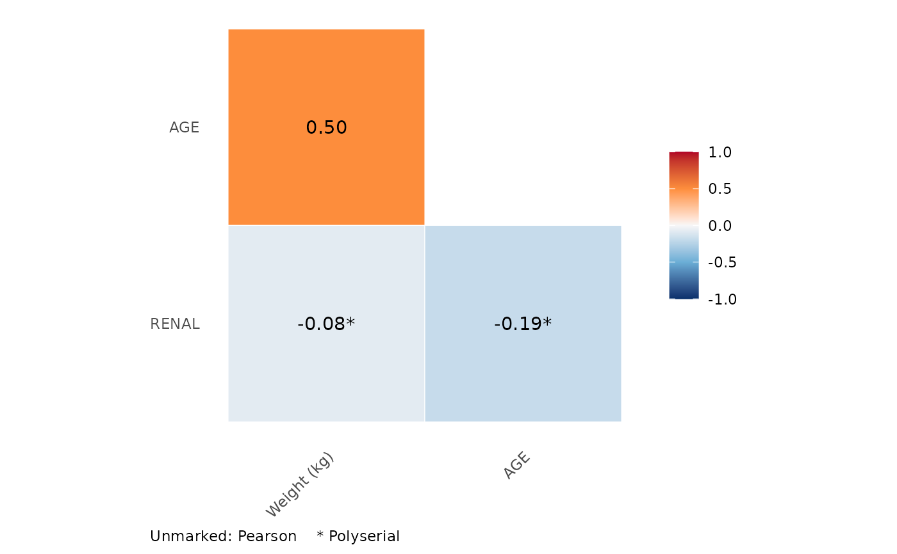

Computes a correlation matrix for a mix of continuous and ordinal variables, choosing the estimator for each pair: Pearson for two numeric variables, polyserial for a numeric and an ordinal variable, and polychoric for two ordinal variables. Useful for exploring covariate relationships before covariate modelling or simulation.
Arguments
- data
A data frame of numeric and/or factor columns.
- plot
If
TRUE, also draw the matrix withplot_cor_triangle().- ...
Passed to
plot_cor_triangle()(e.g.labels,text_size).
Value
A symmetric correlation matrix with the column names of data.
Pairs that cannot be estimated (a factor with one level, or a constant
numeric column) are NA. If plot = TRUE, a list with elements cor
(the matrix) and plot (a ggplot).
Details
Polychoric and polyserial correlations estimate the correlation of underlying normal variables from which the ordinal categories are assumed to arise. Both use the two-step estimator: the thresholds between categories are set from the marginal proportions, and the correlation is then estimated by maximum likelihood (Olsson 1979; Olsson, Drasgow and Dorans 1982).
Numeric columns are treated as continuous and factor columns as ordinal,
using their level order. Unordered factors are accepted with a warning,
because their level order (often alphabetical) may not be meaningful;
convert them with factor(x, levels = ..., ordered = TRUE) first.
Each correlation uses the cases complete for that pair.
References
Olsson U (1979). Maximum likelihood estimation of the polychoric correlation coefficient. Psychometrika, 44, 443-460.
Olsson U, Drasgow F, Dorans NJ (1982). The polyserial correlation coefficient. Psychometrika, 47, 337-347.
Examples
set.seed(1)
n <- 300
wt <- rnorm(n, 70, 12)
age <- 30 + 0.4 * (wt - 70) + rnorm(n, 0, 8)
egfr <- cut(-0.03 * age + rnorm(n), c(-Inf, -2, -1, Inf),
labels = c("severe", "moderate", "normal"),
ordered_result = TRUE)
covs <- data.frame(WT = wt, AGE = age, RENAL = egfr)
het_cor(covs)
#> WT AGE RENAL
#> WT 1.00000000 0.5002072 -0.07769041
#> AGE 0.50020723 1.0000000 -0.18728139
#> RENAL -0.07769041 -0.1872814 1.00000000
res <- het_cor(covs, plot = TRUE, labels = c(WT = "Weight (kg)"))
res$plot
